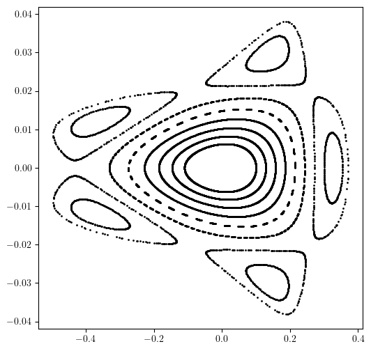

Example-20: LOGO
[1]:
# In this example model logo is created following several steps
# - define fodo based lattice
# - adjust fractional tunes (move horizontal tune close to 2/3)
# - correct chromaticity
# - compute phase space trajectories at a single location
# - choose one lovely trajectory in qx-px and generate initial set
# - slice lattice
# - compute orbits for all initials
# - transform data to layout frame
# - generate 3d layout
# - select a view and save logo
[2]:
# Import
import matplotlib
from matplotlib import pyplot as plt
from matplotlib.patches import Rectangle
matplotlib.rcParams['text.usetex'] = True
from plotly import graph_objects
import torch
from twiss import twiss
from twiss import propagate
from twiss import advance
from twiss import wolski_to_cs
from ndmap.pfp import parametric_fixed_point
from ndmap.evaluate import evaluate
from model.library.drift import Drift
from model.library.quadrupole import Quadrupole
from model.library.sextupole import Sextupole
from model.library.dipole import Dipole
from model.library.bpm import BPM
from model.library.line import Line
from model.command.layout import Layout
[3]:
# Define simple FODO based lattice
QF = Quadrupole('QF', 0.5, +0.20)
QD = Quadrupole('QD', 0.5, -0.19)
SF = Sextupole('SF', 0.25)
SD = Sextupole('SD', 0.25)
DR = Drift('DR', 0.25)
BM = Dipole('BM', 3.50, torch.pi/4.0)
BA = BPM('BA', direction='inverse')
BB = BPM('BB', direction='forward')
FODO = Line('FODO',
[BA, QF, DR, SF, DR, BM, DR, SD, DR, QD, QD, DR, SD, DR, BM, DR, SF, DR, QF, BB],
propagate=True,
dp=0.0,
exact=False,
output=False,
matrix=False)
RING = Line('RING',
4*[FODO],
propagate=True,
dp=0.0,
exact=False,
output=False,
matrix=False)
[4]:
# Slice lattice
RING.ns = 0.05
print(RING.ns)
{'BA': 1, 'QF': 10, 'DR': 5, 'SF': 5, 'BM': 70, 'SD': 5, 'QD': 10, 'BB': 1}
[5]:
# Compute tunes
state = torch.tensor([0.0, 0.0, 0.0, 0.0], dtype=torch.float64)
matrix = torch.func.jacrev(RING)(state)
print(matrix)
print()
(nux, nuy), *_ = twiss(matrix)
print(nux)
print(nuy)
print()
tensor([[ -0.3382, -17.5116, 0.0000, 0.0000],
[ 0.0506, -0.3382, 0.0000, 0.0000],
[ 0.0000, 0.0000, -0.2976, -6.0422],
[ 0.0000, 0.0000, 0.1508, -0.2976]], dtype=torch.float64)
tensor(0.6951, dtype=torch.float64)
tensor(0.7019, dtype=torch.float64)
[6]:
%%time
# Adjust fractional tunes
# Define tune function
def tune(dkn):
dknf, dknd = dkn
data = RING.data()
data['FODO']['QF']['kn'] = dknf
data['FODO']['QD']['kn'] = dknd
matrix = torch.func.jacrev(lambda state, data: RING(state, data=data))(state, data)
tunes, *_ = twiss(matrix)
return tunes
# Define target tune values
nux_target = torch.tensor(0.667, dtype=torch.float64)
nuy_target = torch.tensor(0.700, dtype=torch.float64)
# Perform correction
dkn = torch.tensor([0.0, 0.0], dtype=torch.float64)
for _ in range(8):
dnux = nux - nux_target
dnuy = nuy - nuy_target
(dknf, dknd) = dkn = - torch.linalg.pinv(torch.func.jacrev(tune)(dkn)) @ torch.stack([dnux, dnuy])
nux, nuy = tune(dkn)
QF.kn = (QF.kn + dknf).item()
QD.kn = (QD.kn + dknd).item()
print(tune(dkn) - torch.stack([nux_target, nuy_target]))
tensor([-0.0236, -0.0015], dtype=torch.float64)
tensor([-0.0014, -0.0001], dtype=torch.float64)
tensor([8.9454e-05, 1.0546e-05], dtype=torch.float64)
tensor([-3.6114e-07, -4.0399e-08], dtype=torch.float64)
tensor([-9.9395e-11, -1.1213e-11], dtype=torch.float64)
tensor([ 4.4409e-16, -4.4409e-16], dtype=torch.float64)
tensor([0.0000e+00, 3.3307e-16], dtype=torch.float64)
tensor([0.0000e+00, 6.6613e-16], dtype=torch.float64)
CPU times: user 1min 33s, sys: 458 ms, total: 1min 34s
Wall time: 1min 34s
[7]:
%%time
# Chromaticity
def scan(data, name, target):
for key, value in data.items():
if isinstance(value, dict):
scan(value, name, target)
elif key == name:
data[key] = target
def ring(state, dp, dms):
dp, *_ = dp
dmsf, dmsd, *_ = dms
data = RING.data()
scan(data, 'dp', dp)
data['FODO']['SF']['ms'] = dmsf
data['FODO']['SD']['ms'] = dmsd
return RING(state, data=data)
fp = torch.tensor([0.0, 0.0, 0.0, 0.0], dtype=torch.float64)
dp = torch.tensor([0.0], dtype=torch.float64)
dms = torch.tensor([0.0, 0.0], dtype=torch.float64)
pfp, *_ = parametric_fixed_point((1, ), fp, [dp], ring, dms)
# Define transformation around fixed point
def pfp_ring(state, dp, dms):
return ring(state + evaluate(pfp, [dp]), dp, dms) - evaluate(pfp, [dp])
# Tune
def tune(dp, dms):
matrix = torch.func.jacrev(pfp_ring)(state, dp, dms)
tunes, *_ = twiss(matrix)
return tunes
# Chromaticity
def chromaticity(dms):
return torch.func.jacrev(tune)(dp, dms)
# Initial chomaticity values
psix, psiy = chromaticity(dms).squeeze()
# Define target tune values
psix_target = torch.tensor(5.0, dtype=torch.float64)
psiy_target = torch.tensor(5.0, dtype=torch.float64)
# Perform correction
dpsix = psix - psix_target
dpsiy = psiy - psiy_target
(dmsf, dmsd) = dms = - torch.linalg.pinv((torch.func.jacrev(chromaticity)(dms)).squeeze()) @ torch.stack([dpsix, dpsiy])
SF.ms = (SF.ms + dmsf).item()
SD.ms = (SD.ms + dmsd).item()
dms *= 0.0
print(chromaticity(dms).squeeze() - torch.stack([psix_target, psiy_target]))
tensor([-5.3291e-15, -2.6645e-14], dtype=torch.float64)
CPU times: user 1min 31s, sys: 695 ms, total: 1min 32s
Wall time: 1min 32s
[8]:
%%time
# Generate and plot phase space trajectories
qx = torch.linspace(0.10, 0.30, 8, dtype=torch.float64)
px = torch.zeros_like(qx)
qy = torch.zeros_like(qx)
py = torch.zeros_like(qx)
state = torch.stack([qx, px, qy, py]).T
orbit = []
for _ in range(2**10):
state = torch.vmap(RING)(state)
orbit.append(state)
qx, px, *_ = torch.stack(orbit).swapaxes(0, -1)
plt.figure(figsize=(6, 6))
plt.scatter(qx.cpu().numpy(), px.cpu().numpy(), s=1, color='black')
plt.show()

CPU times: user 19min 50s, sys: 197 ms, total: 19min 50s
Wall time: 19min 50s
[9]:
%%time
# Generate selected trajectory on slices
FODO.output = True
RING.output = True
state = torch.tensor([0.27, 0.0, 0.0, 0.0], dtype=torch.float64)
orbit = []
for _ in range(2**10):
state = RING(state)
orbit.append(RING.container_output.clone())
orbit = torch.stack(orbit)
orbit.shape
CPU times: user 12min 17s, sys: 20.1 ms, total: 12min 17s
Wall time: 12min 17s
[9]:
torch.Size([1024, 968, 4])
[10]:
# 3D
layout = Layout(RING)
names, kinds, lengths, angles, points = layout.slicing_table()
angles = angles.cumsum(-1)
# Transform orbits
qx, px, *_ = orbit.swapaxes(0, 1).swapaxes(0, -1)
q_x = torch.zeros_like(qx)
q_y = 3.0*qx
q_z = 30.0*px
q_points = torch.stack([q_x, q_y, q_z]).swapaxes(0, -1)
q_x, q_y, q_z = torch.vmap(layout.transform)(q_points, points, angles).swapaxes(0, -1)
# Select data at BPMs
q_x_bpm = []
q_y_bpm = []
q_z_bpm = []
for kind, qx, qy, qz in zip(kinds, q_x.T, q_y.T, q_z.T):
if kind == 'BPM':
q_x_bpm.append(qx)
q_y_bpm.append(qy)
q_z_bpm.append(qz)
q_x_bpm = torch.stack(q_x_bpm)
q_y_bpm = torch.stack(q_y_bpm)
q_z_bpm = torch.stack(q_z_bpm)
# Generate reference orbit
x, y, z = layout.orbit(flat=False, step=0.01, start=(0, 0))
# Generate layout (can be saved as html with write_html method)
blocks = layout.profile_3d(scale=1.75)
# Plot
figure = graph_objects.Figure(
data=[
graph_objects.Scatter3d(
x=x.numpy(),
y=y.numpy(),
z=z.numpy(),
mode='lines',
name='Orbit',
line=dict(color='black',width=2.0,dash='solid'),
opacity=0.75,
showlegend=True
),
graph_objects.Scatter3d(
x=q_x.flatten().numpy(),
y=q_y.flatten().numpy(),
z=q_z.flatten().numpy(),
mode='lines',
name='Trajectory',
line=dict(color='black',width=1.0,dash='solid'),
opacity=0.10,
showlegend=True
),
graph_objects.Scatter3d(
x=q_x_bpm.flatten().numpy(),
y=q_y_bpm.flatten().numpy(),
z=q_z_bpm.flatten().numpy(),
mode='markers',
name='Projection',
marker=dict(color='red',size=1.5),
opacity=0.10,
showlegend=True
),
*[graph_objects.Mesh3d(block) for block in blocks]
]
)
figure.update_layout(
scene=dict(
xaxis=dict(visible=False, range=[-20,20]),
yaxis=dict(visible=False, range=[-20,20]),
zaxis=dict(visible=False, range=[-5,5]),
aspectratio=dict(x=1, y=1, z=1/4),
annotations=[]
),
margin=dict(l=0, r=0, t=0, b=0),
legend=dict(orientation='v', x=0., y=1., xanchor='left', yanchor='top'),
hoverlabel=dict(font_size=12, font_family="Rockwell", font_color='white'),
legend_groupclick='toggleitem',
plot_bgcolor='rgba(0, 0, 0, 0)',
paper_bgcolor='rgba(0, 0, 0, 0)'
)
figure.write_html('logo.html')